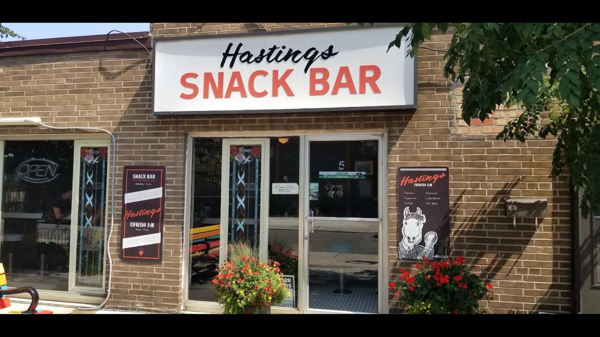

Polish diner · Leslieville · 5 Hastings Avenue
Pierogies, cabbage rolls & a diner counter in Leslieville.
A snug lunch counter just off Queen Street East, serving Polish comfort food, breakfast, and coffee. Reviewers come for the pierogies, the cabbage rolls, and a weekend donut if they get there in time. Call (647) 850-9260.
- Pierogies
- Cabbage rolls
- Kielbasa
- Weekend donuts
- Counter & patio
From the counter
Pierogies & cabbage rolls
The dishes people mention most. Shawon Lee, a self-described cabbage-roll freak, called these “some of the best in town.” Sandi Cole gave both the cabbage rolls and the pierogies an “A+++.” Chantal M said the kolbasa was the best she’d ever had.
Hungry Tata’s lunch & breakfast
Google reviews talk about a Hungry Tata’s lunch that puts cabbage rolls, kielbasa and pierogies on one plate — Alice Leung ordered it so she wouldn’t have to choose. Stephen S came for brunch and had a pork schnitzel on a Kaiser bun. Mikhail Moosa recommends breakfast if you get there early.
A diner counter, and donuts that sell out
Google describes a snug lunch counter serving coffee, pastries, and Polish comfort food on select days. Seating is at the counter; there is a patio in warmer months. Reviewers say the weekend donuts (pączki) sell out, so it helps to come early.
“Polish comfort food in the heart of Leslieville” matches the diner’s own Facebook intro and appears on its public listings. The snug-lunch-counter line is from Google’s description of the place. Dishes come from Google reviews (read on the listing or copied by the CanadaResto directory) and from photos on the public Google listing. No prices are listed here. Call (647) 850-9260 if you have questions about the menu.
5 Hastings Avenue, Leslieville
A Polish lunch counter just off Queen Street East
Wednesday to Sunday, 9 a.m. to 4 p.m.
Hastings Snack Bar is a small diner-style room with counter seating, a patio in summer, and a menu of Polish comfort food. Reviewers talk about homemade pierogies, cabbage rolls, kielbasa, and donuts that don’t last the weekend. It is closed Monday and Tuesday.
“The Polish food tasted very rustic and homey - felt like getting a hug from mom.”
Alice Leung, Google review (as of Nov 13, 2026).
What customers say
4.8 ★ from 521 Google reviews (checked Nov 13, 2026). Quotes are word for word. Each one says where it was read: on the Google listing itself, or on a public page that copies reviews. Google shows only a handful of reviews without signing in, so some quotes are Google reviews copied by the CanadaResto directory.
★★★★★
What a fun little gem to find in Leslieville. This seems to be a best kept secret of the locals. Seems like an old school run classic diner.
We had some of the brunch items. I opted for the pork schnitzel on a Kaiser bun. It was a good size and very delicious.
I would recommend the donuts … yummy!
The vibe is old school inside with counter seating only however the patio is a welcome summer addition.
Want to come back and try some other offerings!
★★★★★
This is the cutest little diner in this area! The Polish food tasted very rustic and homey - felt like getting a hug from mom. I got the Hungry Tata's lunch because I couldn't decide between the cabbage rolls, kielbasa and pierogies. It was so good I finished everything and glad I didn't have to decide. I especially adore the pierogies and cabbage roll. They ran out of donuts (pacski) so I need to come back earlier next time and I'm definitely coming back 😋
★★★★★
Hastings is more than a snack bar! This place screams neighborhood vibes! You can come for breakfast, lunch, a snack or even a drink. Very affordable and you can sit inside or outside. Great service and they have specials as well!
★★★★★
Smashing IT! 😋
I love and adore this cute little diner style restaurant. It is so cute beyond words.
It has that old school vibe from the 70s and 80s with the diner stoles that we miss so much.
The owner and staff are so incredibly friendly hospitable.
And the food is absolutely OUT OF THIS WORD and incredibly DELICIOUS!
At Hastings Snack Bar they are serving up the best and the most authentic Polish comfort food in the city!
The Cabbage Rolls an A+++
The Pierogies an A+++Nestled in the Leslieville area along trendy Queen Street East where all the cool people hang out you will stumble onto Hastings Snack Bar, but do not walk by as you do not want to deny your taste buds and hungry stomach to the most amazing food being served in the city!
It's authentic, it's fresh, it's delicious and you will want to continue to come back many many more times.
★★★★★
I’m a cabbage roll freak, and these are some of the best in town. Melts is your mouth. The sauerkraut, sausage, all top notch.
★★★★★
I loved it there. I’m Polish and this is by far my fav polish spot in the city!
★★★★★
This was sooo good, and service was amazing. Tasty, authentic polish grub! You can tell it’s made with lots of love
★★★★★
Delicious, quant family run snack bar. All the perogies are super tasty and the kolbasa is the best I've ever had!
★★★★★
Small business, family owned, great perogies, amazing breakfast if you get there early. Weekend doughnuts that sell out, and if you need a cut there's a barber in the front.
From the diner
Real photos from Hastings Snack Bar’s public Google listing and its customers’ reviews. Tap to enlarge.
Visit Hastings Snack Bar
5 Hastings Ave
Toronto, ON M4L 2L1
Leslieville, just off Queen Street East
Facebook · Instagram
| Monday | Closed |
|---|---|
| Tuesday | Closed |
| Wednesday | 9 a.m.–4 p.m. |
| Thursday | 9 a.m.–4 p.m. |
| Friday | 9 a.m.–4 p.m. |
| Saturday | 9 a.m.–4 p.m. |
| Sunday | 9 a.m.–4 p.m. |
These are the hours on Google today: closed Monday and Tuesday, open 9 a.m. to 4 p.m. Wednesday through Sunday. The diner’s Instagram bio says the same (9–4PM Wed–Sun). Its Facebook page intro says “OPEN: Tues to Sunday 9AM - 4PM,” which disagrees on Tuesday; Google is used here. Weekend donuts can sell out. Instagram is the website listed on Google; the bio asks people not to send DMs.